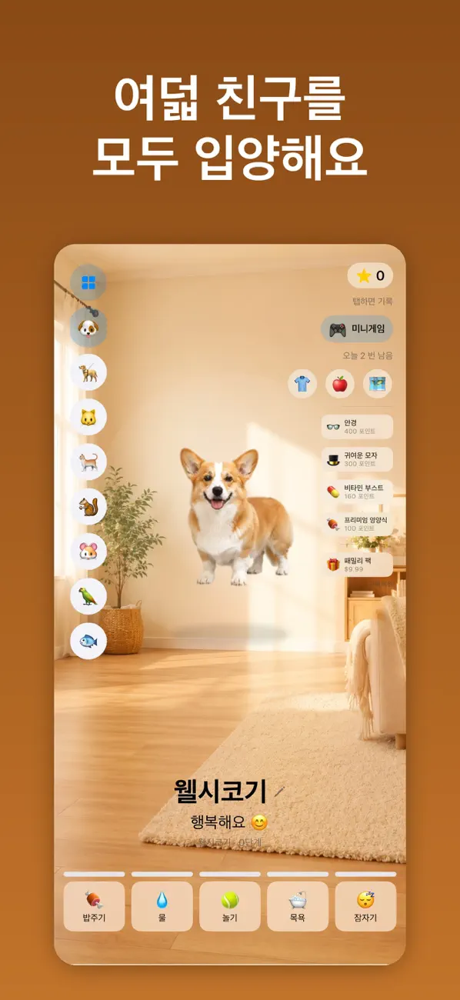

가상 반려동물 키우기 게임 (Virtual Pets) 이용 안내
처음 만난 펫 돌보기
돌보기 화면에서 펫의 이름 아래 기분 문구를 확인하고, 화면 아래 다섯 버튼으로 밥주기·물 주기·놀기·목욕·잠자기를 할 수 있습니다. 포인트로 꾸미기 아이템을 고르는 방법과 패밀리 팩의 차이도 함께 살펴봅니다.
먼저 돌볼 펫과 기분 문구를 확인한 다음, 원하는 돌보기 버튼을 선택해 보세요.
App Store에서 무료로 받기
무료로 다운로드할 수 있으며 앱 내 구입이 포함되어 있습니다.
1단계: 돌보기 화면을 읽는 순서
- 화면 왼쪽의 펫 목록에서 지금 돌볼 펫을 확인합니다. 다른 펫을 돌보고 싶다면 목록에서 해당 펫을 선택하세요.
- 펫 이름 아래에 표시되는 기분 문구를 먼저 읽습니다. 행복해요처럼 지금 상태를 알려 주는 문구가 이 자리에 보입니다.
- 화면 아래 다섯 버튼(밥주기 / 물 / 놀기 / 목욕 / 잠자기)을 한 번씩 살펴보고, 지금 이 펫에게 무엇이 필요한지 스스로 판단합니다.
- 버튼을 선택한 뒤 화면에 안내가 이어지면 해당 내용을 확인하며 진행하세요.
아래 표는 화면 아래에 보이는 다섯 버튼의 뜻만 정리한 것입니다. 무엇을 먼저 눌러야 하는지는 펫의 상태와 화면에 보이는 문구에 따라 달라집니다.
| 화면 버튼 | 이 버튼으로 하는 일 |
|---|---|
| 밥주기 | 화면의 버튼 이름처럼 펫에게 밥을 줍니다. |
| 물 | 펫에게 물을 주는 기능입니다. |
| 놀기 | 펫과 함께 놀 때 선택합니다. |
| 목욕 | 펫을 씻길 때 선택합니다. |
| 잠자기 | 펫을 재울 때 선택합니다. |

2단계: 포인트와 꾸미기, 패밀리 팩 구분하기
돌보기에 익숙해졌다면 화면 오른쪽 위를 살펴볼 차례입니다. 여기에서 보이는 포인트와 유료 구매는 서로 다른 개념입니다.
- 화면 오른쪽 위의 포인트 숫자와 미니게임 버튼을 확인합니다. 미니게임으로 포인트를 모을 수 있습니다.
- 모은 포인트는 모자나 안경 같은 꾸미기 아이템에 사용합니다. 아이템마다 필요한 포인트가 함께 표시됩니다.
- 패밀리 팩은 모든 펫을 해제하는 선택형 1회 구매이며, 구매 전에 보호자 확인 단계가 있습니다.
- 패밀리 팩의 현재 가격과 구매 조건은 앱 안 구매 화면에서 확인하세요.